地城迴響 · 技能展示
每個技能一段 GIF，內容是「還沒開 → 發動 → 生效中」的完整一輪， 不是只有命中那一瞬間。左下角的 buff 圖示與武器上的光效都在畫面裡， 可以直接對照。哪個看起來不對，跟我說是哪一個就好。
錄的是 iOS 模擬器的實際遊戲畫面（含 UI），不是素材預覽。畫面上方的 橘紅色「BETA・技能書掉率測試 8%」表示這是臨時調高掉率的測試版—— 正式版會改回 0.08%，那行字也會自動變回金色的 BETA。
為了在暗色地城裡看得清楚，GIF 有整體提亮處理；實機會比這裡再暗一些。 沙包敵人設成打不死，所以附魔類可以一直看到命中特效。
四種共用（兩個職業都能學）。這一組是這次改動的重點：持續期間武器本身會發光、左下角有 buff 圖示顯示剩餘時間，不再是只有命中瞬間才看得到。
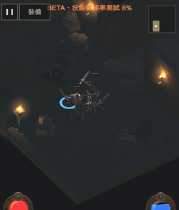
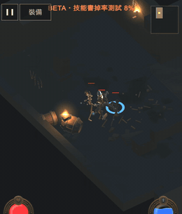
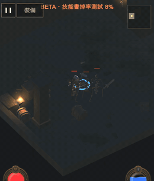
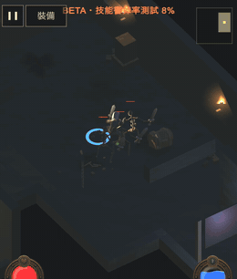
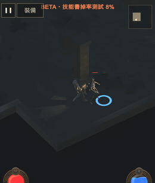
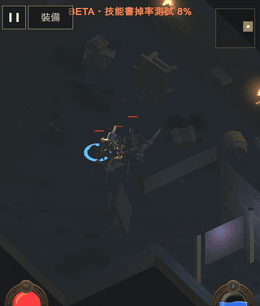
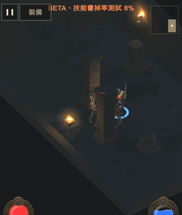
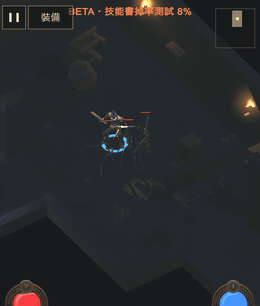
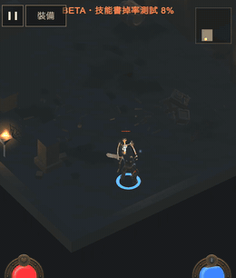
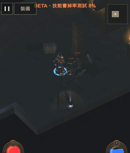
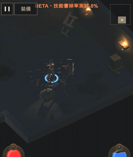
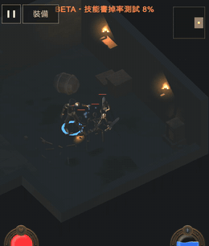
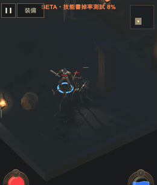
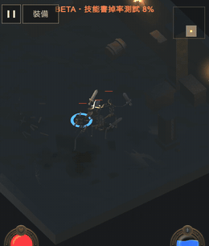
瞬發技能的 GIF 有一段「什麼都沒發生」。衝鋒、閃現、寒冰新星、 奧術飛彈是瞬發，旋風斬只有 1.5 秒，但每段 GIF 固定 7.5 秒， 所以效果結束後還有幾秒空景。這是錄製節奏的問題不是技能本身的問題， 但看的時候要知道「後面沒東西是正常的」。要我把瞬發類的片段剪短也可以。
畫面偏暗、角色偏小。遊戲的鏡頭是固定的斜俯視，我沒有為了錄影去改它 （改了就不是玩家實際看到的樣子）。GIF 已經提亮過，但細節仍然不如靜態截圖清楚。
| 要決定的 | 為什麼不能我自己決定 |
|---|---|
| 哪些技能的特效要加強／收斂 | 「夠不夠有展示感」是美術判斷。上一輪就是我覺得可以、實機看起來卻是「一閃即逝」 |
| buff 圖示用色條還是倒數數字 | 目前是色條為主、秒數小字在下。戰鬥中哪個比較好讀，要實際玩過才知道 |
| 瞬發技能的 GIF 要不要剪短 | 剪短比較好看，但會失去「技能持續多久」的真實感 |